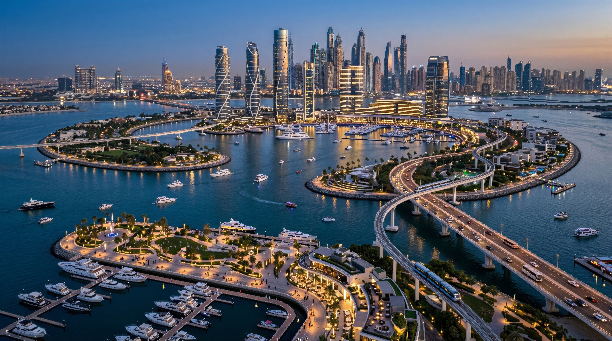
Fedezd fel a világ legkülönlegesebb országát, ahol az ultramodern metropoliszok, az ókori építészet mesterművei, az érintetlen trópusi paradicsomok, a burjánzó vadregényes esőerdők és a hófödte hegycsúcsok egyetlen nemzet határain belül találkoznak.
Nova Aurelia nemcsak Waikiki, hanem az egész világ fővárosa. Hatalmas felhőkarcolóival, kormányzati negyedével és évezredes ókori műemlékeivel méltán nyerte el a világ legszebb városa címet. A hétmillió lakosa mellett évente 35 millió látogató keresi fel a metropoliszt.
Az azték építészet remekművei, a Római Birodalom grandiózus hagyatéka és az angol klasszicista kastélyok alkotják a város páratlan történelmi magját.
A világ legmagasabb és legmerészebb felhőkarcolói formálják a lenyűgöző sziluettet, amelyet a Világkormány székhelyének három tornya koronáz meg.
A Hotel President 15 csillagos pompájától a Paradise Islands vízi villáiig a Starlight Hotels és más világmárkák felejthetetlen élményeket kínálnak.
Disneyland, Legoland, a világ legnagyobb állatkertje és az Aqua World mind Nova Aureliában várja a családokat és a kalandvágyó turistákat.
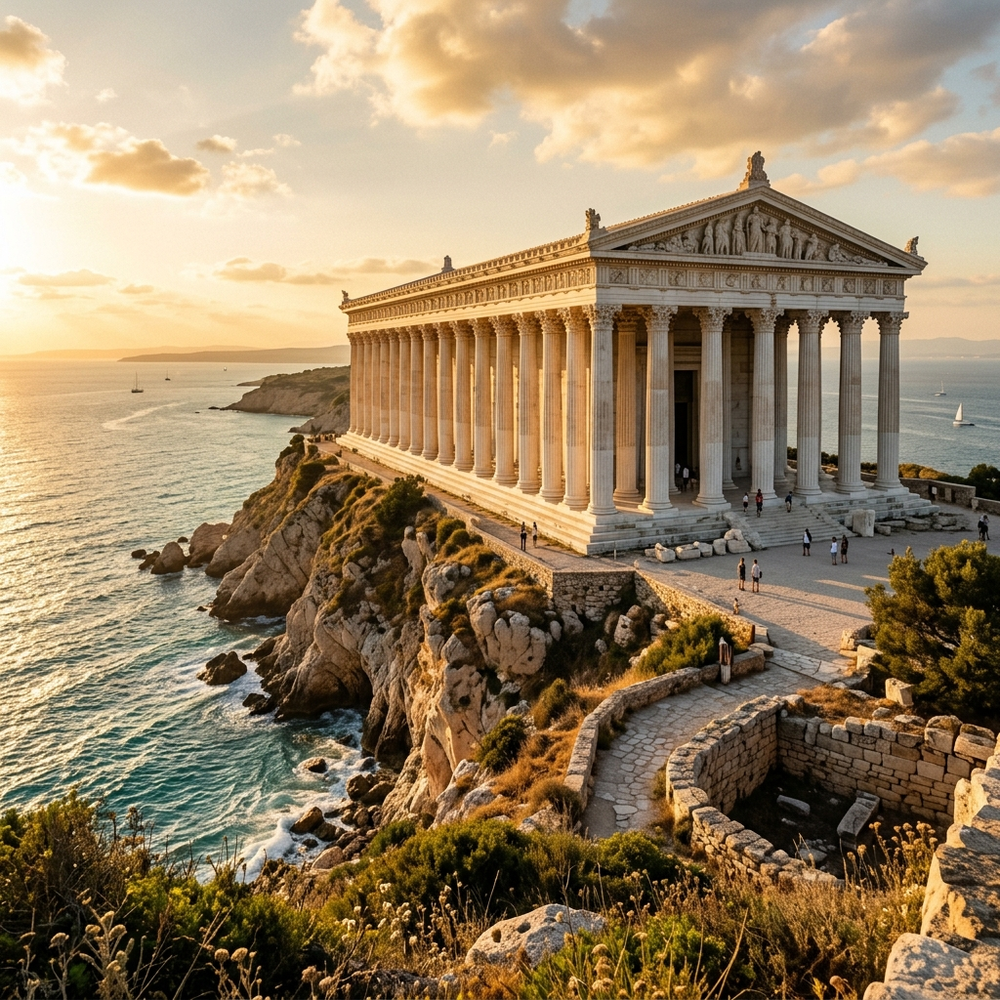
Waikiki a történelem során számtalan birodalom része volt, és ez a gazdag örökség ma is áthatja Nova Aurelia utcáit. Az ókori római településtől az angol gyarmati korszakon át a modern fővárosig minden korszak maradandó nyomot hagyott.
Nova Aurelia látképét a világ legmerészebb mérnöki alkotásai uralják. Az üzleti negyedben a legnagyobb nemzetközi vállalatok központjai sorakoznak, a sziluettet pedig ikonikus épületek formálják.
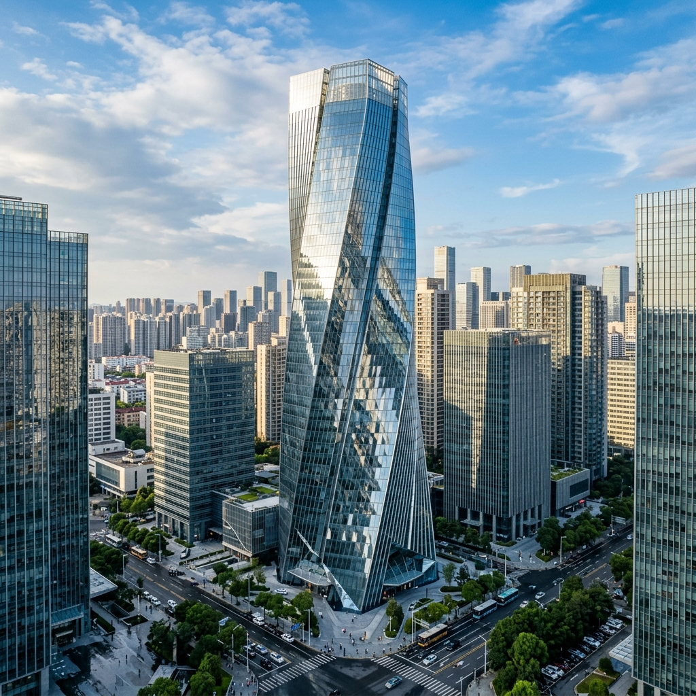
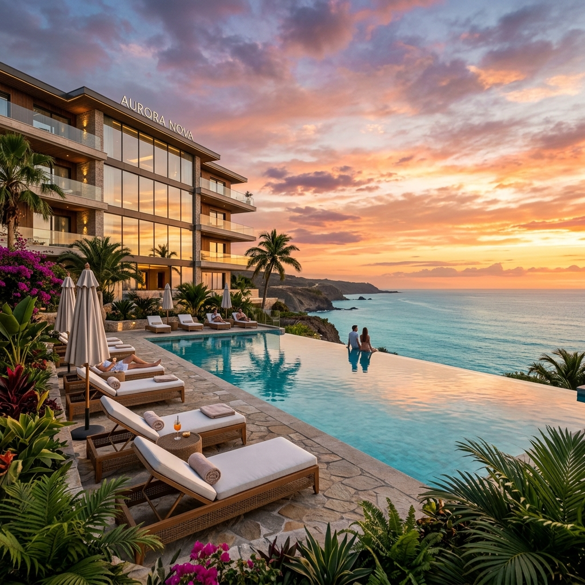
Waikiki a prémium turizmus fellegvára. A szigetország szállodái a kényelem és az exkluzivitás legmagasabb szintjét képviselik, ahol a vendégek a világ legkülönlegesebb helyszínein pihenhetnek.
A kormány vezetőinek és a királyi családnak otthont adó rezidenciák a világ legértékesebb ingatlanjai. Minden palota a legmagasabb technológiai színvonalat ötvözi a klasszikus elegancia időtlen szépségével.
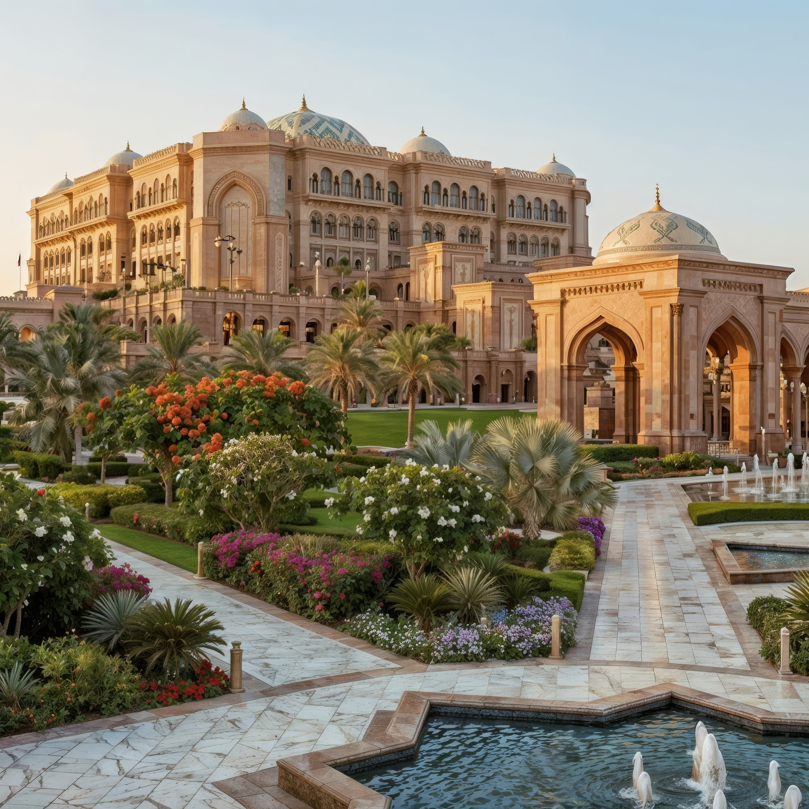
Családi kikapcsolódás világszínvonalon. Nova Aurelia a szórakoztatóipar egyik globális központja, ahol a világ leghíresebb tematikus parkjai várják a látogatókat.
Waikiki két Disneylanddel és három Legoladdal büszkélkedik. A riói Legolandben több mint 90 millió LEGO kockát használtak fel a világ nagyvárosaink miniatűr makettjeihez.
A világ legnagyobb vízi vidámparkja több mint 80 csúszdával és 40 medencével. A 75 méter magas „Mount Everest" csúszdán akár 110 km/h sebességet is elérhetünk.
A világ legnagyobb állatkertje, ahol a legegzotikusabb állatokkal is testközelből találkozhatunk. Sarki kupola, fedett őserdei kifutó és állandó delfin show-k várják a látogatókat.
Az amazóniai nyaralás során nem hagyható ki a Kennedy Space Center, ahol kipróbálhatjuk a leszálló modul irányítását és megkóstolhatjuk az űrhajósok ételeit.
A fővároson túl egy egész világ tárul fel: érintetlen természeti tájak, trópusi paradicsomok, őserdők és hófödte hegycsúcsok, amelyek egyetlen nemzet határain belül kínálnak felejthetetlen élményeket.
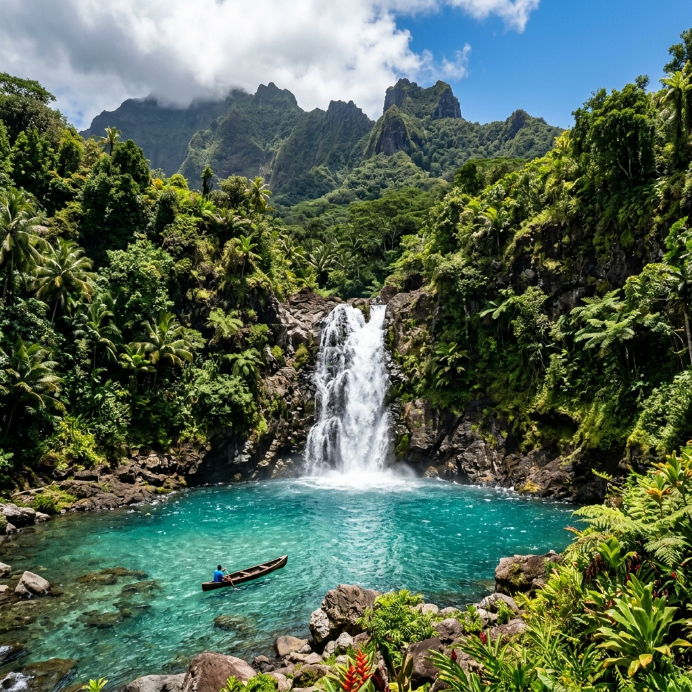
Waikiki nemcsak az építészet, hanem a természet szentélye is. A fenséges vulkanikus hegycsúcsoktól a kristálytiszta lagúnákba ömlő vízesésekig minden tájegység egyedi varázslatot rejt, amelyhez foghatót kevés helyen találunk a világon.
A Waikiki-szigetvilág több száz kisebb-nagyobb szigete a világ legexkluzívabb pihenőhelye. A fehér homokos partok, a türkizkék lagúnák és a korallzátonyok páratlan élővilága minden képzeletet felülmúl.
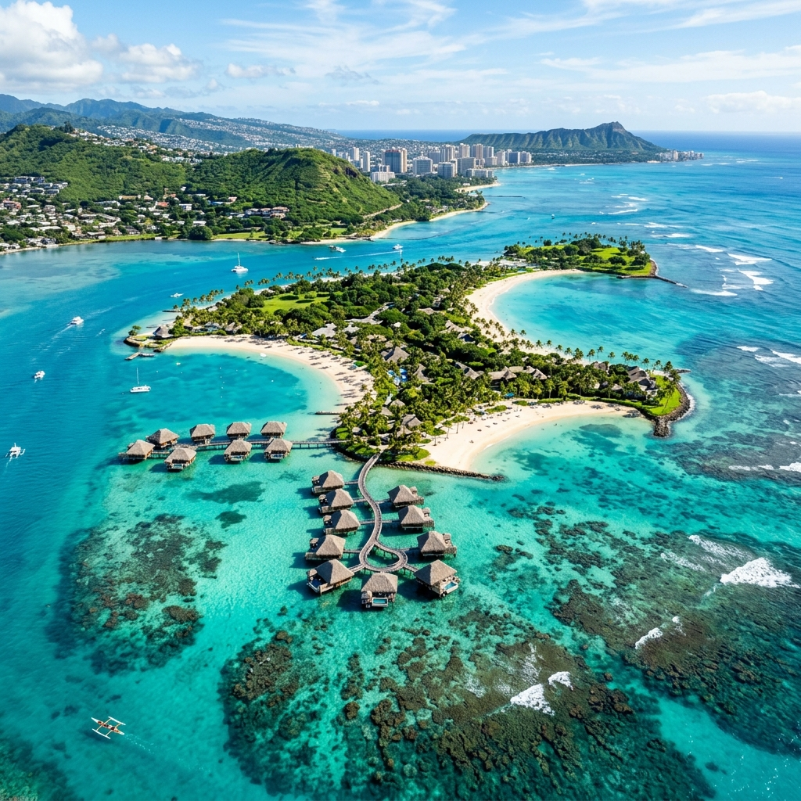
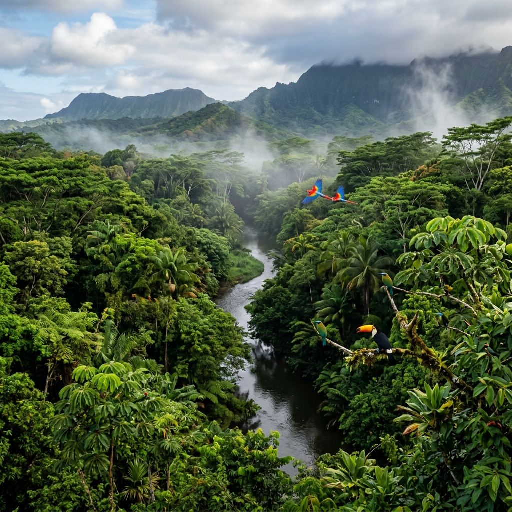
Waikiki amazóniai tartományai a Föld tüdejét őrzik. A burjánzó zöld növényzet és a rendkívül gazdag állatvilág a kalandvágyó utazók számára tartogat felejthetetlen élményeket, miközben a Zöld Waikiki program biztosítja a természeti értékek megőrzését.
Waikiki egyik legnagyobb meglepetése a magashegységek örök hava. A legmodernebb sífelvonók és luxus chaletek várják a téli sportok szerelmeseit, mindezt trópusi tengerpartok közvetlen közelében, így a délelőtti síelés után délután már szörfözhetünk is.
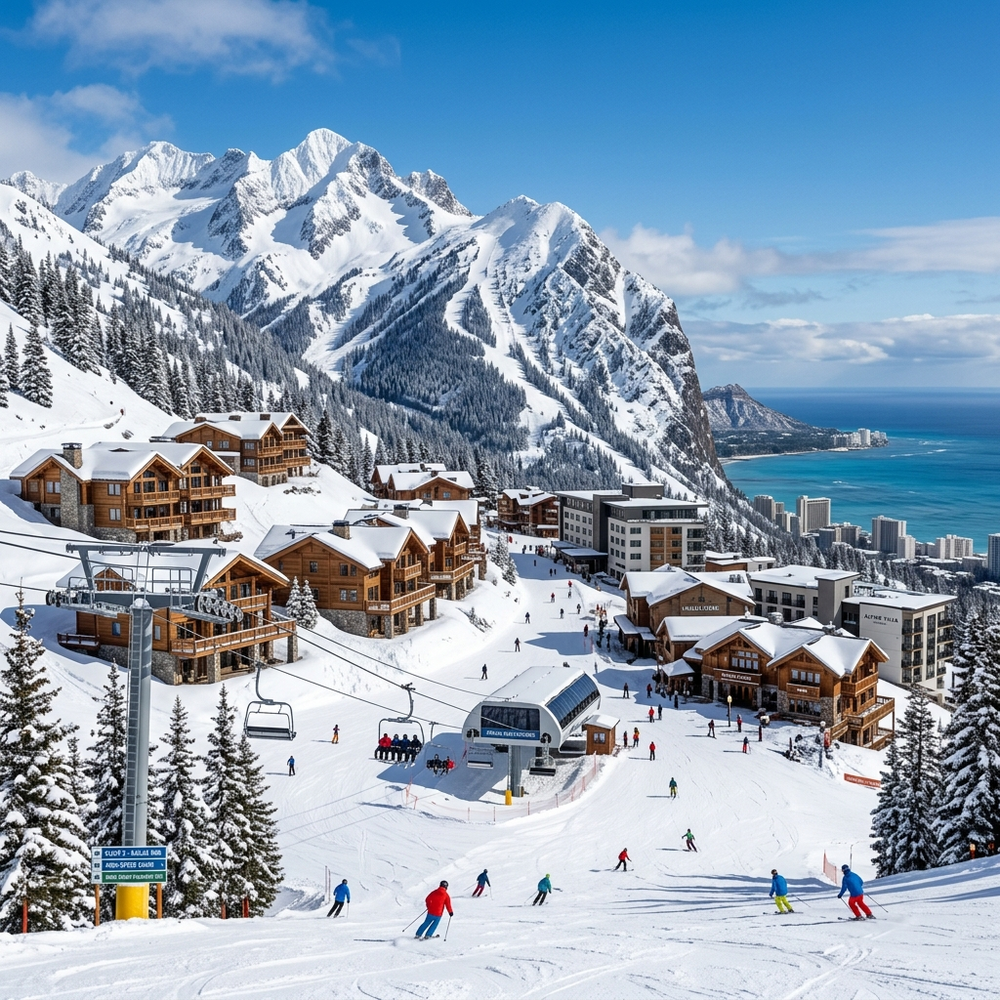
Nova Aurelia fejlődése páratlan a világtörténelemben. A római településtől a modern világkormány székhelyéig hosszú út vezetett, melynek során a város megőrizte lelkét és kincseit.
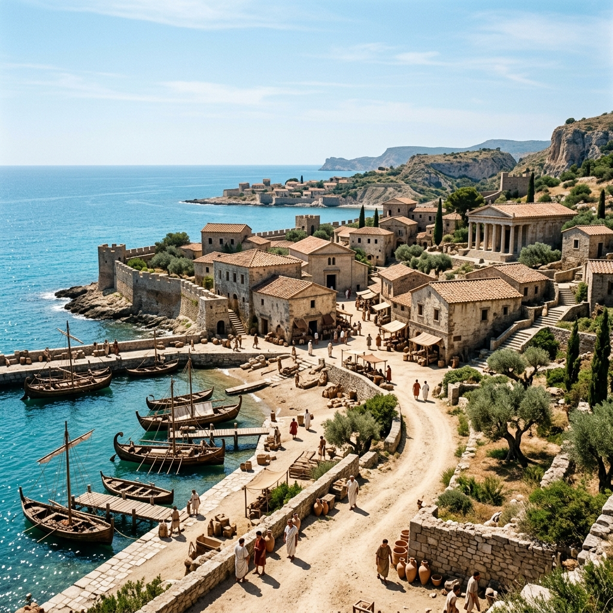
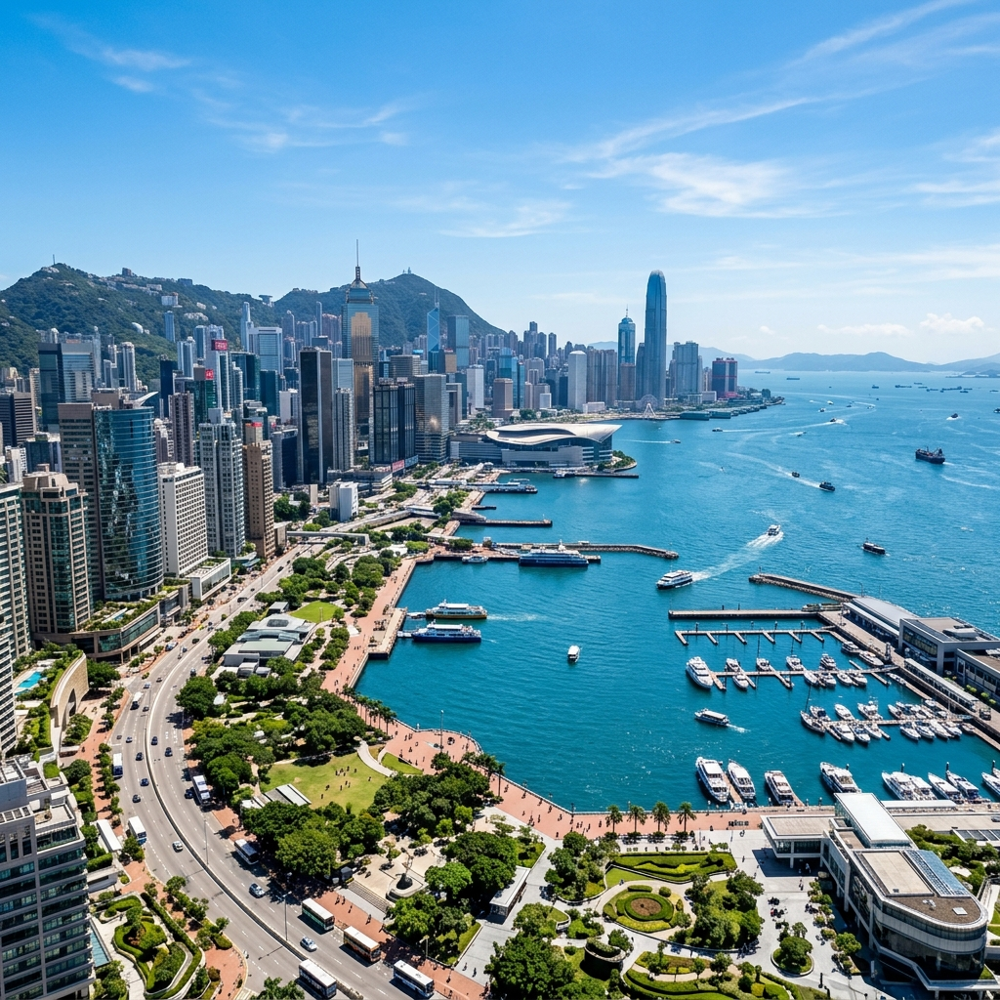